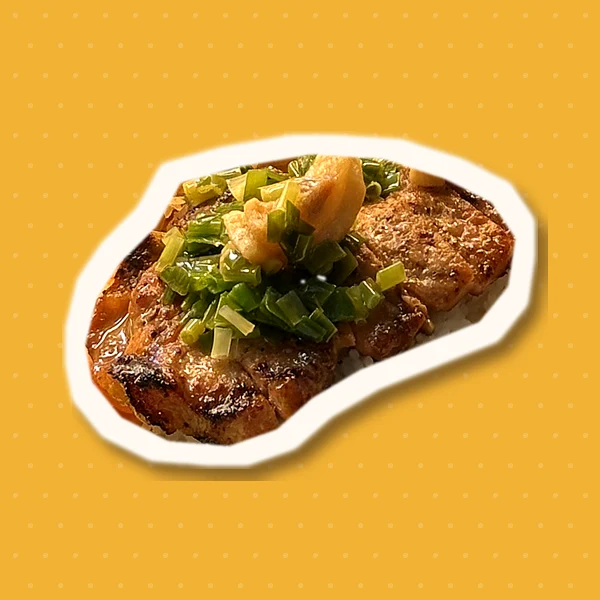
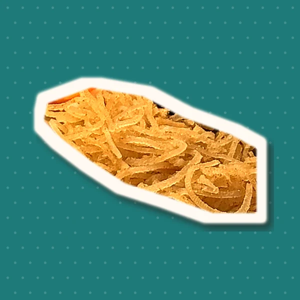
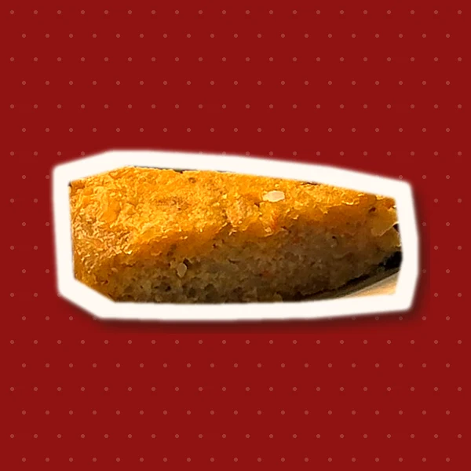
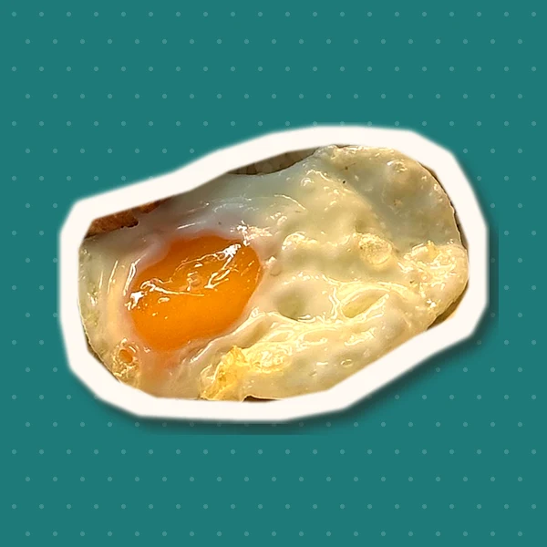
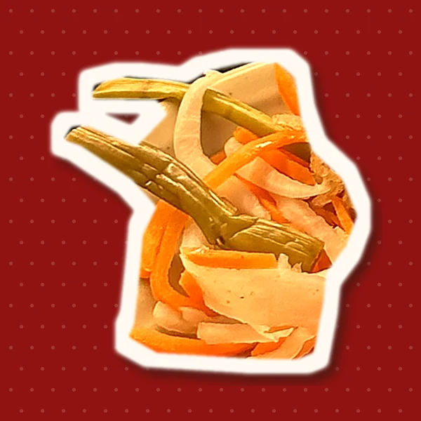
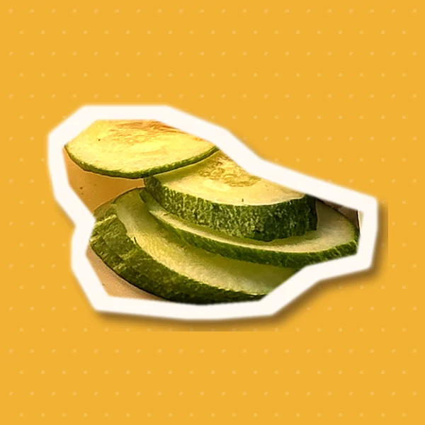

GIẢI MÃ
CHỮ “TẤM”
“Theo tiếng gọi, khám phá vị Sài Gòn”
Ngày nào Sài Gòn cũng gọi “Tấm ơi!”. TẤM ƠI! là lời mời nhìn lại dĩa cơm quen thuộc ấy từ một góc khác.
Chiến dịch dành cho sinh viên Gen Z (18–24) tại TP.HCM: hiểu đúng chữ “tấm”, phân biệt điều có nguồn với giai thoại, và kể lại câu chuyện cơm tấm của chính mình.






Món quen nhất,
nhưng ít ai
chắc chắn
Cơm tấm là bữa ăn quen của sinh viên Sài Gòn: sau giờ học, gần trường, đi cùng bạn bè. Vậy mà khi được hỏi chữ “tấm” là gì, câu trả lời hay bắt đầu bằng “hình như…”.
Trên mạng, chuyện nguồn gốc món ăn được kể đi kể lại: có chuyện có tư liệu, có chuyện chỉ là giai thoại. TẤM ƠI! không cố nhồi thật nhiều thông tin, mà giúp người xem biết cho đúng, theo cách vui nhất: đi cùng cô Tấm lạc xuống Sài Gòn.
Ngồi xuống nghe họ kể
“{{b.answer}}”
5 giai đoạn sản xuất
- 01 · Ý tưởng Brainstorm,khảo sát và phỏng vấn chuyên sâu, rút key findings và concept “Tấm Ơi!”.
- 02 · Tiền kỳ Kịch bản, moodboard, nhân vật, shot list, call sheet, scout địa điểm.
- 03 · Sản xuất Sáng quay phố và quán Ba Thiện, chiều quay cảnh cổ tích ở studio.
- 04 · Hậu kỳ Dựng phim, kỹ xảo xuyên không, chỉnh màu, âm thanh, phụ đề, poster và minh hoạ.
- 05 · Phát hành Kênh Facebook & TikTok, chuỗi bài theo lịch đăng, website và phim ngắn.

Cơm tấm Ba Thiện
Cảm ơn anh chủ quán đã cho nhóm quay tại quán, hỗ trợ toàn bộ phần cơm tấm lên hình và mời cả nhóm một bữa cơm sau buổi quay. Nhờ vậy cô Tấm mới có dĩa cơm đầu tiên ở Sài Gòn.
Đường 9A/31 Phước Thiện, Long Bình, TP. Thủ Đức
Đọc lời anh chủ quán kể